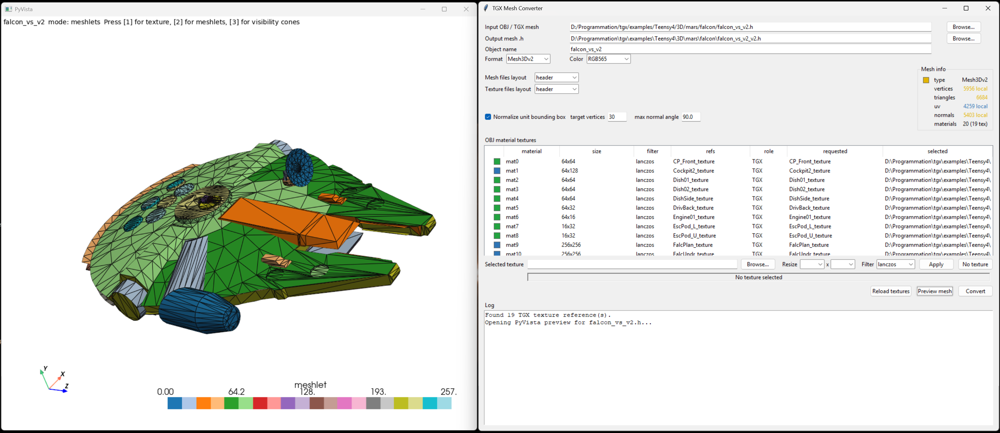

|
TGX 1.1.2
A tiny 2D/3D graphics library optimized for 32 bits microcontrollers.
|
|
TGX 1.1.2
A tiny 2D/3D graphics library optimized for 32 bits microcontrollers.
|
TGX provides a small set of desktop tools to prepare assets before they are included in a sketch or C++ project. These tools convert common image, mesh and font formats into C++ files directly usable by TGX, and they can inspect the generated files afterwards.
The graphical tools are meant to be the comfortable path for everyday use. For example, tgx_mesh.py can load an OBJ or TGX mesh, preview materials and textures, tune conversion settings and export ready-to-include C++ files:

| Tool | Purpose |
|---|---|
tools/tgx_image.py | Convert PNG/JPEG/BMP/TGA images to TGX Image headers. |
tools/tgx_mesh.py | Convert OBJ files or existing TGX meshes to Mesh3D or Mesh3Dv2. |
tools/tgx_font.py | Convert TrueType/OpenType fonts to TGX-compatible font headers. |
tools/tgx_info.py | Inspect generated TGX image, mesh and font files. |
The graphical tools are the recommended entry points for most users. Command line versions also exist under tools/cli_tools/ for scripts, batch conversion and repeatable builds.
The tools are optional. They run on the development computer when preparing assets; they are not needed by the MCU at runtime, and they are not needed to compile a sketch that already contains its generated assets.
Install TGX as usual first. The tools are only needed on the development computer when you want to generate assets.
Use a recent Python 3 installation, then run this command from the TGX repository root:
The setup script checks:
If Python packages are missing, install them in the same Python environment:
On Linux, Tkinter may require a system package, for example:
The mesh converter needs CMake and a C++ compiler:
cmake and g++ or clang++.LKH is optional. If it is not installed, mesh conversion still works, but triangle strips may be less optimal. The setup script explains how to add LKH later if desired.
To check the current setup without rebuilding anything:
Each public tool checks the setup at startup. This helps catch the common case where the tool is launched from the wrong Python environment.
Run:
tgx_image.py converts regular image files to C++ tgx::Image objects. It can:
RGB565, RGB24 or RGB32;.h file or a .h + .cpp pair.This is the tool to use for sprites, icons, texture images and other fixed bitmap assets that should be compiled into a sketch.
Run:
tgx_mesh.py converts Wavefront OBJ models, or existing TGX mesh headers, to:
For OBJ files, the tool reads materials and textures when available. The GUI shows a material list and a texture list. Materials can be renamed and edited without duplicating texture assets: one texture can be linked by several materials as a diffuse or emissive texture, and unused textures are omitted from the final export. Each material stores diffuse color, lighting strengths, specular exponent and an optional diffuse texture.
For Mesh3Dv2, a material can also use an optional extended material entry with emissive color, emissive strength and an optional emissive texture. OBJ/MTL Ke becomes emissive color and map_Ke becomes the emissive texture. This data is stored in the optional Mesh3Dv2::material_extras table. The current renderer preserves and caches this metadata but does not shade with it yet.
The GUI can also preview the model with PyVista, including textured rendering and Mesh3Dv2 meshlet visualization.
For a first conversion, keep the GUI defaults:
Mesh3Dv2 output;RGB565 color, recommended on embedded displays;Compact meshlet generation;Non-adjacent packing set to 0.This usually gives a good embedded compromise: compact mesh data, no aggressive second packing pass, and visibility cones still generated for runtime culling. The alternate Visibility culling mode exposes target vertices and max normal angle when culling quality is more important than static memory size. Tune meshlet or texture options only after inspecting the generated mesh and measuring the real sketch on the target board.
Run:
tgx_font.py converts TrueType/OpenType fonts to font formats supported by TGX:
ILI9341_t3_font_t v2.3;GFXfont.The GUI lets the user select one or several sizes, choose the character set, choose the output format, enable PROGMEM, and write either a single .h file or a .h + .cpp pair.
This is useful when only a subset of characters is needed. Keeping only the characters used by a sketch can save a lot of flash memory.
Run:
tgx_info.py is a read-only inspector. Give it a generated .h or .cpp file and it detects whether it contains an image, mesh or font.
It reports information such as:
It can also save image/font preview PNGs, and can open the mesh viewer for mesh assets. Use it to check generated files before including them in a sketch.
Each graphical tool has a command-line counterpart under tools/cli_tools/:
| CLI tool | Purpose |
|---|---|
tgx_image_cli.py | Scripted image conversion. |
tgx_mesh_cli.py | Scripted OBJ/TGX mesh conversion. |
tgx_font_cli.py | Scripted font conversion. |
tgx_info_cli.py | Scripted asset inspection. |
The command-line tools are useful for automation and reproducible asset builds. They expose more options than the graphical tools. See tools/cli_tools/README.md and the --help output of each command for the full reference.
The tools generate ordinary C++ files. They can be included in sketches like hand-written assets:
.h + .cpp output is often cleaner for larger C++ projects;PROGMEM output keeps large constant data in flash on Arduino-style targets.Generated files are meant to be readable and inspectable. They can be committed with a project, so users of the final sketch do not need Python or the TGX tools.
tools/legacy_tools/ contains older conversion scripts kept for old projects and reference:
image_converter.pyobj_to_h.pytexture_2_h.pyNew projects should normally use tgx_image.py, tgx_mesh.py, tgx_font.py and tgx_info.py.